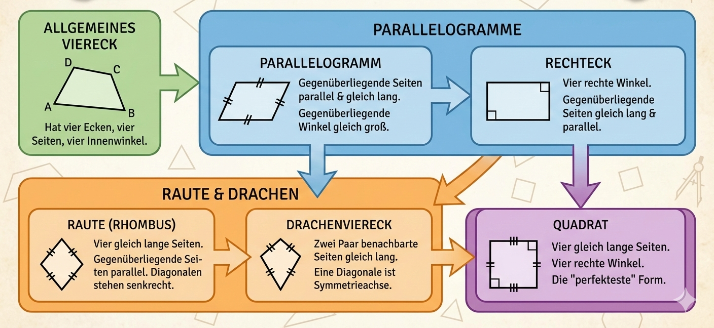

Du lernst vom allgemeinen Viereck bis zum Quadrat alle wichtigen Formen
und ihre Merkmale. Das Modul fuehrt dich Schritt fuer Schritt mit
Uebungen und Kurztest.
Lehrplanbezug Niedersachsen (Gymnasium 5/6)
Das Modul orientiert sich am Kerncurriculum Mathematik Gymnasium
Niedersachsen (Stand 30.06.2021). Im Lernbereich Raum und Form sollen
Schuelerinnen und Schueler Vierecke charakterisieren, Fachbegriffe
sicher nutzen und Zusammenhaenge im Haus der Vierecke erkennen.
Eigenschaften von Quadrat, Rechteck, Parallelogramm, Raute, Drachen und Trapez beschreiben
parallel, senkrecht, Strecke, Winkel und Symmetrie korrekt anwenden
Vierecke nach gemeinsamen Merkmalen ordnen und Beziehungen begruenden
Fachbegriffe auch bei Figuren aus der Umwelt wiedererkennen
Quellen: Kerncurriculum Mathematik Gymnasium 5-10, Kapitel zu SJG 5/6
(Raum und Form, Abbildungen und Symmetrien).
Didaktischer Lernweg in 6 Schritten
1) Basis sichern
Wiederhole erst: Ecke, Seite, Winkel, parallel und senkrecht.
Mini-Check: Erkennst du parallele Seitenpaare in einer Skizze?
2) Allgemeines Viereck
Ein Viereck hat vier Seiten, vier Ecken und vier Innenwinkel.
Mini-Check: Ist jedes gezeichnete Viereck schon ein Rechteck? Nein.
3) Besondere Merkmale
Arbeite mit klaren Fragen: rechte Winkel? gleich lange Seiten? parallele Seiten?
Mini-Check: Welche zwei Merkmale bestimmen ein Rechteck?
4) Verwandtschaft sehen
Im Haus der Vierecke zeigt sich: Manche Figuren sind Spezialfaelle anderer Figuren.
Mini-Check: Warum ist jedes Quadrat auch ein Rechteck?
5) Symmetrie nutzen
Spiegelachsen und diagonale Eigenschaften helfen beim Unterscheiden.
Mini-Check: Welche Figur hat immer vier gleich lange Seiten?
6) Anwenden
Ordne Merkmale zu, pruefe Aussagen und loese kurze Testaufgaben.
Mini-Check: Kannst du eine Begruendung in einem Satz geben?
So arbeitest du sinnvoll durch das Modul
Lies erst die Merksaetze und vergleiche sie mit der Uebersichtsgrafik.
Starte in Trainieren mit "Merkmal zur Figur", dann mit dem Eigenschafts-Filter.
Bearbeite danach die Aussagen zum Haus der Vierecke.
Gehe erst in den Test, wenn du jede Figur in einem Satz begruenden kannst.
Uebersichtsgrafik: Besondere Vierecke
Die Grafik zeigt die wichtigsten Formen und deren Beziehungen.
Die Kopfzeile wurde bewusst entfernt, damit nur die fachlichen Inhalte
sichtbar bleiben.

Nutze die Grafik wie eine Landkarte: vom allgemeinen Viereck zu immer spezielleren Formen.
Merksaetze fuer Klasse 5
Parallelogramm
Beide Gegenueberseiten sind parallel und gleich lang.
Rechteck
Ein Parallelogramm mit vier rechten Winkeln.
Raute
Ein Parallelogramm mit vier gleich langen Seiten.
Drachenviereck
Zwei Paare benachbarter Seiten sind gleich lang.
Trapez
Mindestens ein Paar gegenueberliegender Seiten ist parallel.
Quadrat
Vier rechte Winkel und vier gleich lange Seiten. Deshalb auch Rechteck und Raute.
Typische Stolperstellen
Nicht nur auf die Lage schauen: Eine gedrehte Figur bleibt die gleiche Figur.
Definitionen sind staerker als Gefuehl: Rechteck heisst nicht automatisch "lang".
Ein Gegenbeispiel reicht: Wenn eine Bedingung fehlt, ist es keine passende Form.
Beim Begruenden immer mindestens ein Merkmal nennen (z. B. "vier rechte Winkel").
Interaktiv 1: Merkmal zur Figur zuordnen
Lies die Aussage und waehle die passendste Figur. Danach kannst du
jede Zuordnung direkt pruefen.
Interaktiv 2: Eigenschafts-Filter
Setze Haken bei Merkmalen und sieh, welche Figuren dazu passen.
So erkennst du das Haus der Vierecke in Aktion.
Hinweis: Der Filter arbeitet mit Kernmerkmalen. Spezialfaelle
erkennst du, wenn du mehrere Merkmale kombinierst.
Schnellauswahl
Waehle Merkmale und klicke auf "Filter anwenden".
Interaktiv 3: Aussagen zum Haus der Vierecke
Entscheide bei jeder Aussage: stimmt sie oder nicht?
Kurztest: Besondere Vierecke
Acht Fragen pruefen, ob du Definitionen, Beziehungen und Begruendungen
sicher anwenden kannst.